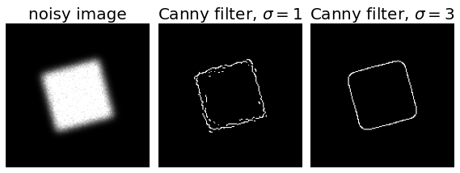
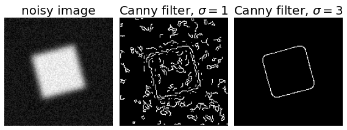

Uncanny Detection
Uncanny Detection¶
The canny filter is multi-stage edge detector (also suppresses noise) The filter is based on the derivative of a Gaussian
Steps:
Noise reduction
Gradient calculation
Non-Maximum suppression
Double threshold
Edge Tracing by Hysteresis
3 parameters: * The width of the Gaussian * The low threshold for the hysteresis thresholding * The high for the hysteresis thresholding
import numpy as np
import matplotlib.pyplot as plt
from scipy import ndimage as ndi
from skimage.util import random_noise
from skimage import feature
# Generate noisy image of a square
image = np.zeros((128, 128), dtype=float)
image[32:-32, 32:-32] = 1
image = ndi.rotate(image, 15, mode='constant')
image = ndi.gaussian_filter(image, 4)
image = random_noise(image, mode='speckle', mean=0.1)
# Compute the Canny filter for two values of sigma
edges1 = feature.canny(image)
edges2 = feature.canny(image, sigma=3)
# display results
fig, ax = plt.subplots(nrows=1, ncols=3, figsize=(8, 3))
ax[0].imshow(image, cmap='gray')
ax[0].set_title('noisy image', fontsize=20)
ax[1].imshow(edges1, cmap='gray')
ax[1].set_title(r'Canny filter, $\sigma=1$', fontsize=20)
ax[2].imshow(edges2, cmap='gray')
ax[2].set_title(r'Canny filter, $\sigma=3$', fontsize=20)
for a in ax:
a.axis('off')
fig.tight_layout()
plt.show()

# Generate noisy image of a square
im = np.zeros((128, 128))
im[32:-32, 32:-32] = 1
im = ndi.rotate(im, 15, mode='constant')
im = ndi.gaussian_filter(im, 4)
im += 0.2 * np.random.random(im.shape)
# Compute the Canny filter for two values of sigma
edges1 = feature.canny(im)
edges2 = feature.canny(im, sigma=3)
# display results
fig, (ax1, ax2, ax3) = plt.subplots(nrows=1, ncols=3, figsize=(8, 3),
sharex=True, sharey=True)
ax1.imshow(im, cmap=plt.cm.gray)
ax1.axis('off')
ax1.set_title('noisy image', fontsize=20)
ax2.imshow(edges1, cmap=plt.cm.gray)
ax2.axis('off')
ax2.set_title('Canny filter, $\sigma=1$', fontsize=20)
ax3.imshow(edges2, cmap=plt.cm.gray)
ax3.axis('off')
ax3.set_title('Canny filter, $\sigma=3$', fontsize=20)
fig.tight_layout()
plt.show()

import numpy as np
import cv2 as cv
from matplotlib import pyplot as plt
img = cv.imread('messi5.jpg',0)
edges = cv.Canny(img,100,200)
plt.subplot(121),plt.imshow(img,cmap = 'gray')
plt.title('Original Image'), plt.xticks([]), plt.yticks([])
plt.subplot(122),plt.imshow(edges,cmap = 'gray')
plt.title('Edge Image'), plt.xticks([]), plt.yticks([])
plt.show()
---------------------------------------------------------------------------
ModuleNotFoundError Traceback (most recent call last)
~\AppData\Local\Temp/ipykernel_28940/4173787708.py in <module>
1 import numpy as np
----> 2 import cv2 as cv
3 from matplotlib import pyplot as plt
4 img = cv.imread('messi5.jpg',0)
5 edges = cv.Canny(img,100,200)
ModuleNotFoundError: No module named 'cv2'